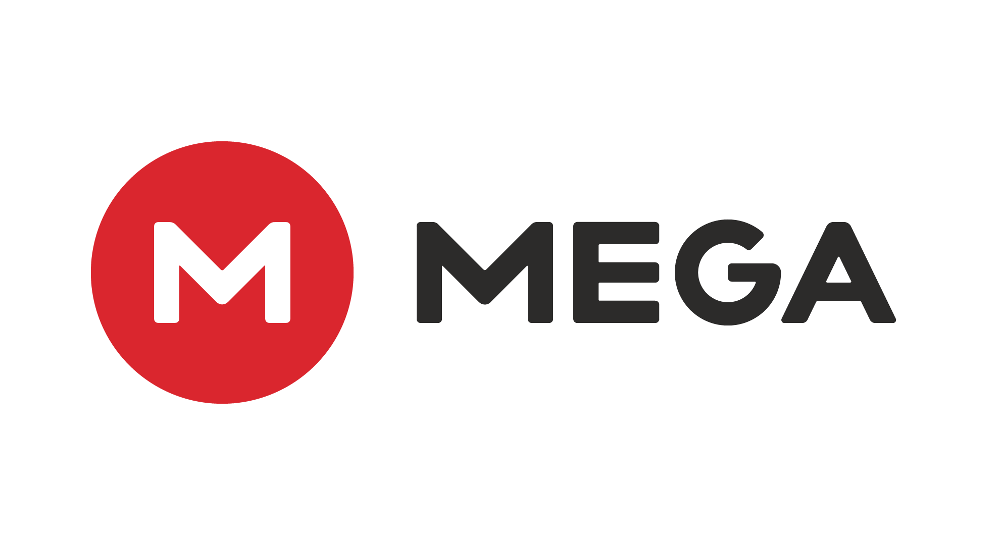
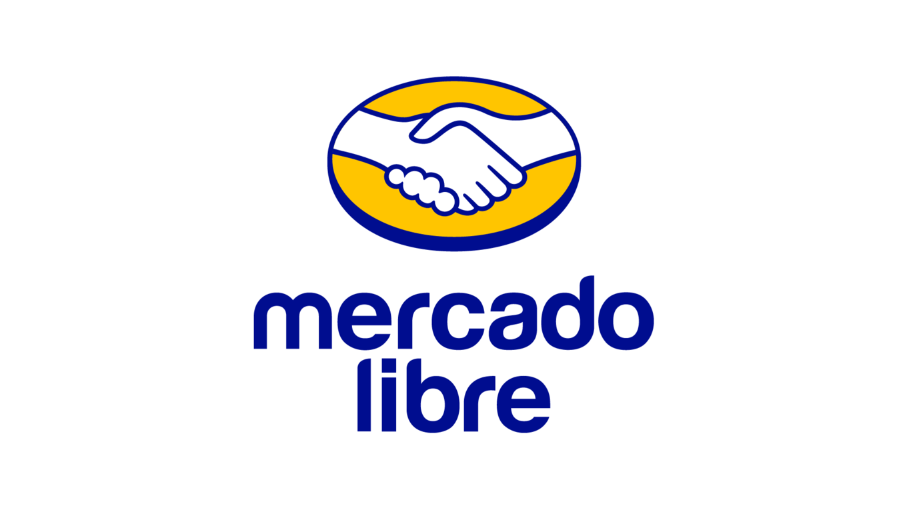
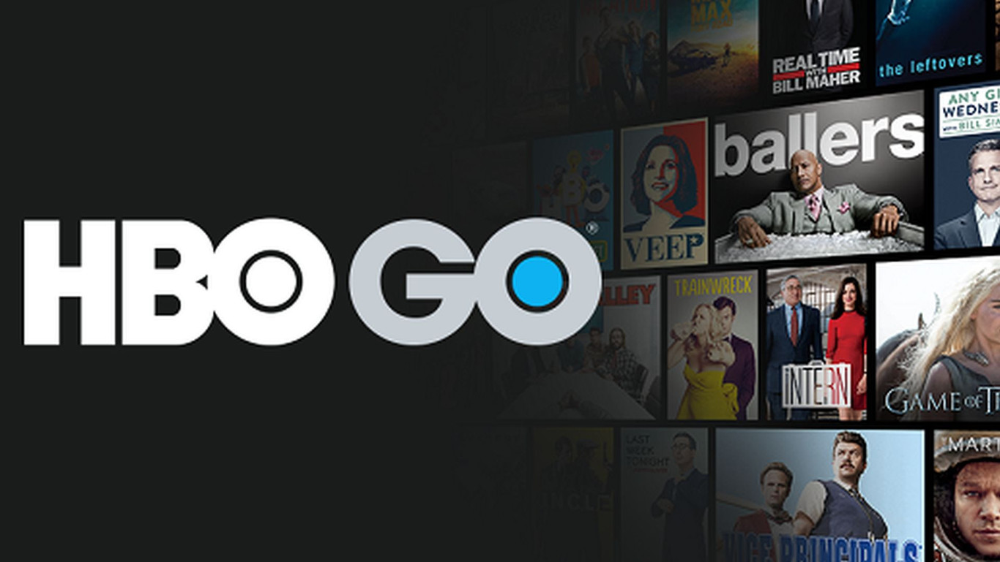

Netflix
Netflix, Inc. es una empresa de entretenimiento estadounidense, que opera a nivel mundial, cuyo servicio principal es la distribución de contenidos audiovisuales a través de una plataforma en línea o servicio de video bajo demanda por streaming.

Mega
Mega es el sucesor del servicio de archivos en la nube Megaupload y Megavideo. El sitio web se lanzó el 19 de enero de 2013 a las 03:48 hora neozelandesa para coincidir con el primer aniversario del cierre de Megaupload por el FBI.

Mercado libre
MercadoLibre es una empresa Argentina dedicada a compras, ventas y pagos por Internet. Cuenta con operaciones en países como Bolivia, Brasil, Chile, Colombia, Costa Rica, Ecuador, Guatemala, México, Nicaragua, Panamá, Perú, Paraguay, El Salvador, República Dominicana, Uruguay, Honduras y Venezuela.

HBO GO
Traducción del inglés-HBO Go es un servicio de transmisión de video a pedido de TV Everywhere ofrecido por la red de cable premium estadounidense HBO.

{kind=link}
{kind=link}
{kind=link}